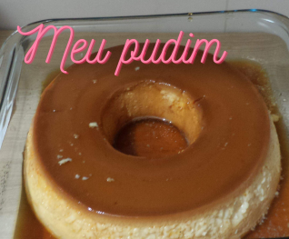

Pudim de Leite

Apresento a vocês o meu delicioso pudim de leite condensado.
Vamos para a receita!
Você já caramelizou uma forma de pudim? Se não, peça ajuda para quem já fez.
Dica: utilize aquelas luvas que protegem as mãos do calor!
Caramelizando a forma:
- Na forma de pudim, coloque 1 xícara (chá) de açúcar refinado;
- Coloque-a em fogo baixo e, com a ajuda de uma colher de silicone, vá mexendo até derreter o açúcar e chegar na cor de caramelo;
- Passe esse caramelo nas laterais da forma, com a ajuda da colher.
- Reserve.
Ingredientes do nosso delicioso pudim:
- 3 ovos;
- 1 lata de leite condensado de 395g (guarde a lata para usar de medida);
- 1 lata de leite (medida da lata de leite condensado);
- 4 colheres de (sopa) de leite em pó (opcional, mas fica mais gostoso).
Modo de Preparo:
- Bata todos os ingredientes acima até ficar bem homogêneo;
- Despeje o conteúdo dentro da forma caramelizada;
- Feche bem a forma com papel alumínio para não entrar água;
- Asse em forno médio por aproximadamente 45 minutos, com a assadeira redonda dentro de uma maior com água;
- Faça o teste do palito/garfo para ver se está pronto;
- Deixe esfriar para desenformar.